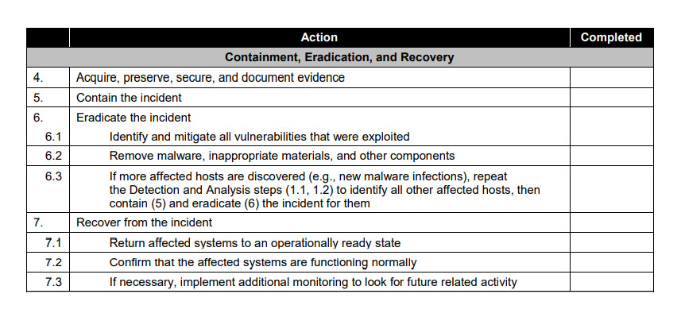

Computer Security
Incident Handling Guide
Computer Security
Incident Handling Guide
Presented at
by Ahmada Yusril, ITSec Engineer@PANDI
Computer Security
Incident Handling Guide

Preparation
“Better safe than sorry.”
Preparing to Handle Incidents
- Incident Handler Communications and Facilities
- Incident Analysis Hardware and Software
- Incident Analysis Resources
- Incident Mitigation Software
Preventing Incidents
- Risk Assessments
- Host Security
- Network Security
- Malware Prevention
- User Awareness and Training
Detection & Analysis
“Knowing is half the battle.”
Attack Vectors
- External/Removable Media
- Attrition/Degradation
- Web
- Impersonation
- Improper Usage
- Loss or Theft of Equipment
- and Others 👻
Signs of an Incident: Precursors
A sign that an incident may occur in the future
- Web server log entries that show the usage of a vulnerability scanner
- An announcement of a new exploit that targets a vulnerability of the organization’s mail server
- A threat from a group stating that the group will attack the organization
Signs of an Incident: Indicators
A sign that an incident may have occurred or
may be occurring now
- Antivirus software alerts when it detects that a host is infected with malware
- A system administrator sees a filename with unusual characters
- An application logs multiple failed login attempts from an unfamiliar remote system
- A network administrator notices an unusual deviation from typical network traffic flows
Sources of Precursors and Indicators
- Alerts: IDPS, SIEM, Antivirus/Antispam, File integrity checking software, Third-party monitoring services
- Logs: OS logs, Service logs, Application logs, Network device logs, Network flows
- Publicly Available Information: New vulnerabilities and exploits information
- People: Information from people within the organization and other organizations
Incident Analysis
- Maintain and Use a Knowledge Base of Information
- Use Internet Search Engines for Research
- Understand Normal Behaviors
- Create a Log Retention Policy
- Perform Event Correlation
- Filter the Data
- Seek Assistance from Others
Incident Documentation
- The current status of the incident
- A summary of the incident
- Indicators and other incidents related to the incident
- Actions taken by all incident handlers on this incident
- Impact assessments related to the inciden
- Contact information for other involved parties
- A list of evidence gathered during the incident investigation
- Comments from incident handlers
- Next steps to be taken
Incident Prioritization
- Functional Impact of the Incident
- Information Impact of the Incident
- Recoverability from the Incident
Incident Notification
- CIO
- Head of information security
- Local information security officer
- Other incident response teams within the organization
- External incident response teams (if appropriate)
- System owner
- Human resources/Public affairs/Legal department
- Law enforcement (if appropriate)
Containment, Eradication, Recovery
Choosing a Containment Strategy
- Potential damage to and theft of resources
- Need for evidence preservation
- Service availability
- Resources needed to implement the strategy
- Effectiveness of the strategy
- Duration of the solution
Evidence Gathering and Handling
It is generally desirable to acquire evidence from a system of interest as soon as one suspects that an incident may have occurred.
Evidence Gathering and Handling
From an evidentiary standpoint, it is much better to get a snapshot of the system as-is rather than doing so after incident handlers, system administrators, and others have inadvertently altered the state of the machine during the investigation.
Identifying the Attacking Hosts
- Validating the Attacking Host’s IP Address
- Researching the Attacking Host through Search Engines
- Using Incident Databases
- Monitoring Possible Attacker Communication Channels
Eradication and Recovery
After an incident has been contained, eradication may be necessary to eliminate components of the incident.
Eradication and Recovery
During eradication, it is important to identify all affected hosts within the organization so that they can be remediated.
Eradication and Recovery
In recovery, administrators restore systems to normal operation, confirm that the systems are functioning normally, and (if applicable) remediate vulnerabilities to prevent similar incidents.
Post-Incident Activity
“Mistakes are not a problem.
Not learning from them is.”
Lessons Learned
- Exactly what happened, and at what times?
- How well did staff and management perform?
- What information was needed sooner?
- Were any steps or actions taken that might have inhibited the recovery?
- What would be done differently the next incident?
- How could information sharing with other organizations have been improved?
- How to prevent similar incidents in the future?
- What precursors/indicators should be watched in the future?
- What additional tools or resources are needed for future incidents?
Using Collected Incident Data
- Number of Incidents Handled
- Time Per Incident
- Objective Assessment of Each Incident
- Subjective Assessment of Each Incident
Evidence Retention
- Prosecution
- Data Retention
- Cost
Incident Handling Checklist ✅
Incident Handling Checklist ✅
Incident Handling Checklist ✅
Incident Handling Checklist ✅
Recommendations
Recommendations
- Acquire tools and resources that may be of value during incident handling
- Prevent incidents from occurring by ensuring that networks, systems, and applications are sufficiently secure
- Identify precursors and indicators through alerts generated by several types of security software
- Establish mechanisms for outside parties to report incidents
Recommendations
- Require a baseline level of logging and auditing on all systems, and a higher baseline level on all critical systems
- Do profiling for networks and systems
- Understand the normal behaviors of networks, systems, and applications
- Create a log retention policy
Recommendations
- Perform event correlation & keep all host clocks synchronized
- Maintain and use a knowledge base of information
- Start recording all information as soon as the team suspects that an incident has occurred
Recommendations
- Safeguard incident data
- Prioritize handling of the incidents based on the relevant factors
- Establish strategies and procedures for containing incidents
Recommendations
- Follow established procedures for evidence gathering and handling
- Hold lessons learned meetings after major incidents
Thank you!
This presentation will be uploaded to
s.id/materi-itcamp-yusril